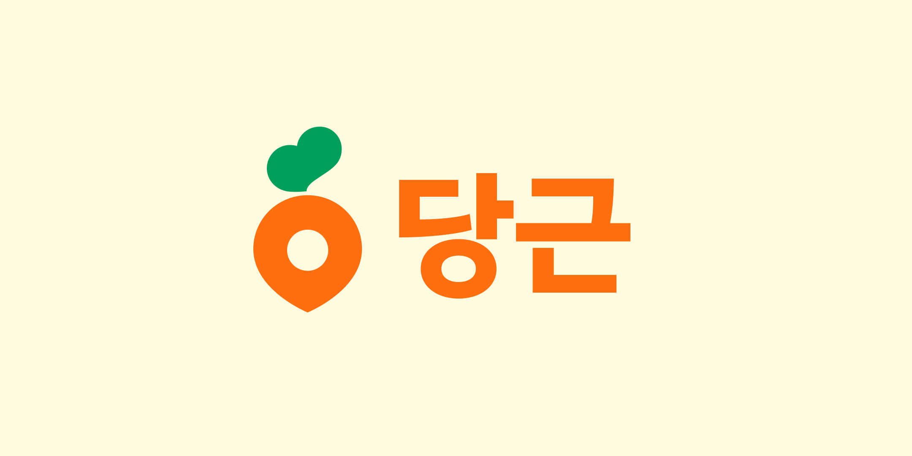
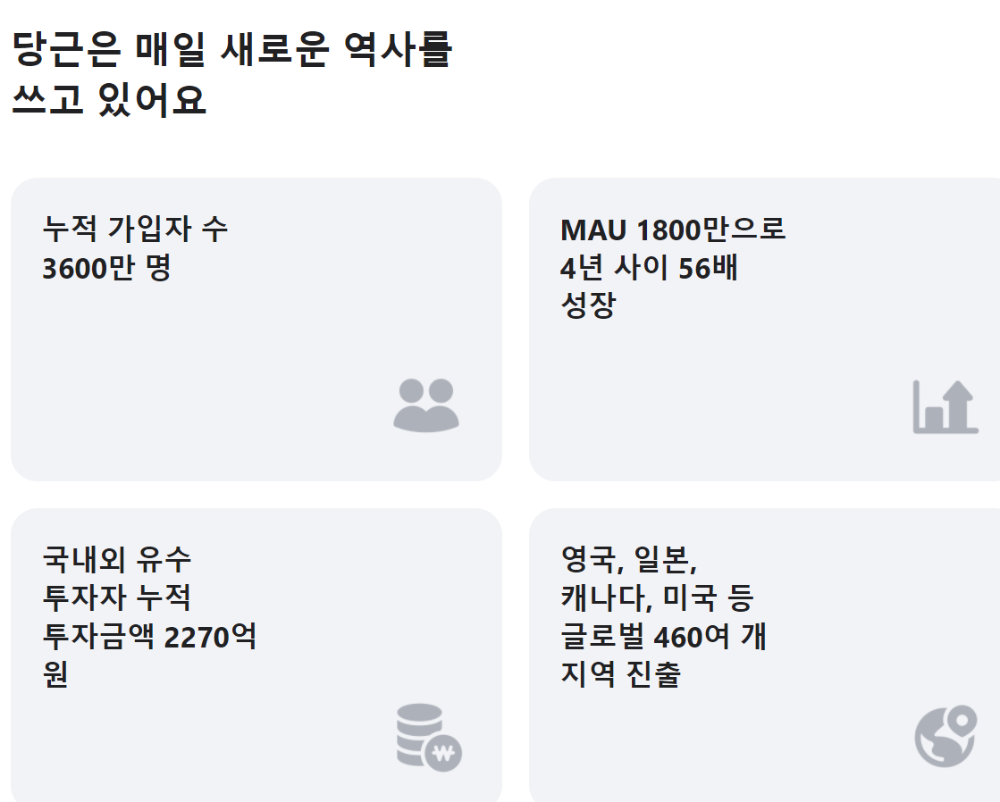
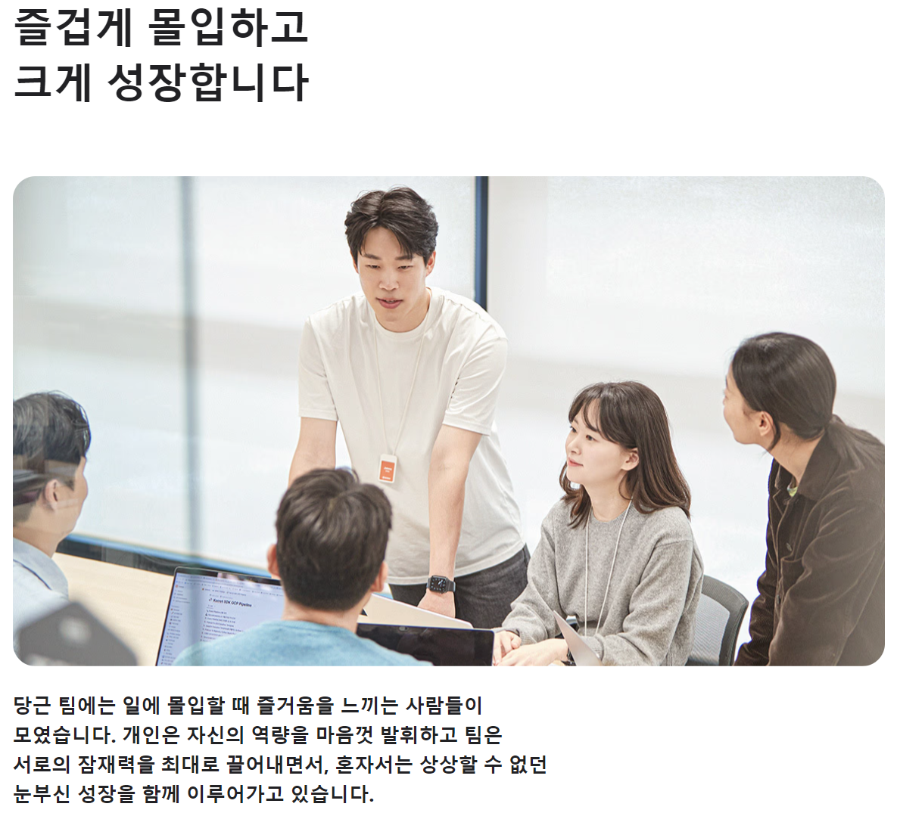
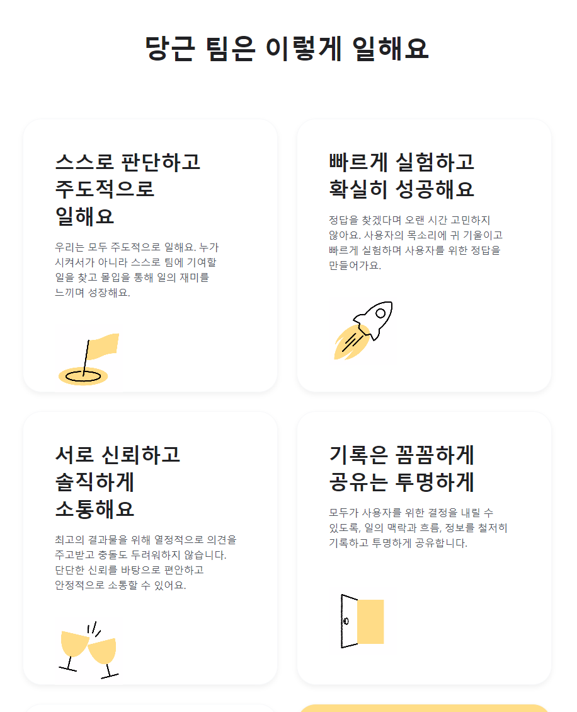
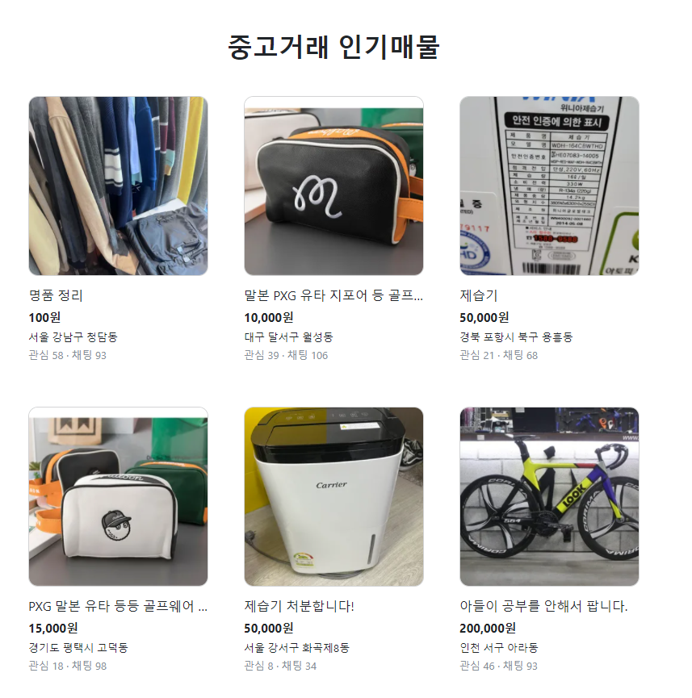

HTML 공부
BLESS NET 경쟁사 홈페이지
경쟁사 1 오늘의 집
경쟁사 2 당근
경쟁사 3 디시인사이드
각 플랫폼 세부 정리
오늘의집 정리
당근 정리
디시인사이드 정리
당근

회사소개
이웃과 더 가까워지는
따뜻한 동네
를 만들어요.
우리 동네 이웃 5명 중 3명은 당근으로 이웃과 함께하고 있습니다.
중고 직거래로 시작한 당근은 이웃과 이웃,
흩어져 있던 정보를 연결하며
세상에 없던 지역 기반 커뮤니티 서비스를 만들어 나가고 있어요.
우리는 사용자 가치를 가장 중요하게 생각해요.
중고거래에서 하나의 커뮤니티로 방향성을 잡은 듯?
당근 성장 현황

팀 문화
 
중고거래(너무 아이덴티티가 깊이 밖힌 느낌이랄까)

객관적으로 쇼핑몰처럼 보일 것 같긴한데..
Document
다크모드 토글
Set color